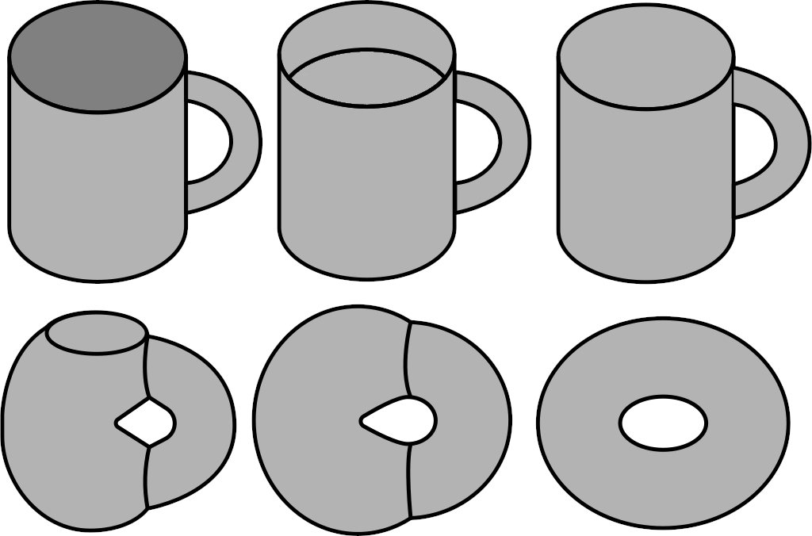

§ GT: Topology
Topology is the study of properties of spaces that do not change under smooth deformations. This is called invariance. The way I like to think of this is by imagining the surfaces to be made of clay. we can change the shapes of these surfaces, under certain rules, and the interest of the field of topology is in general properties shared by all these deformations. Thus, topologically all the shapes that belong to a certain class and can be interchanged through deformation are topologically equivalent. A standard joke is the topological equivalence of a coffee cup and a donut → Both have one hole! These kinds of relationships are called homeomorphisms in Topology

The main idea starts by classifying sets and then figure out a way to stack structures on top of it and this is the essence of spaces. A recurring theme, then, is figuring out a way to preserve structures while transforming a set. In other words, we first need to define a way to give structure to a set. Let u define two things here:
- Space → We take a set and add some kind of structure to it to form a space. This structure is defined by a topology on a set, or a group structure, etc. Thus, a set is basically space where the structure is Null
- Map → A map between two sets ϕ:A→B is ar elation such that ∀a∈A there exists exactly one b∈B such that ϕ(a,b), and we can say b=ϕ(a)
Now, we can define this recurring theme as essentially the classification of spaces based on structure-preserving maps between those spaces.
§ Topological Spaces
In vanilla calculus, we define a function as
f:Rn→Rm⟺∀x→x′∈Rm⟹f(x)→f(x′)
We call
Rn as the Domain of this function and
Rm as the co-domain of this function. Now, if we are to generalize this notion, we are essentially generalizing the domain and the co-domain to arbitrary sets on which this function can be defined i.e
f:X→Y⟺∀x∈X→y∈Y⟹f(x)→f(y)
However, we need to define what it means when we say
x→y. One way to do this is through the
Metric Space where we say that the idea of
x approaching a value
y implies that a certain notion of distance between these points tends to reduce towards zero. This distance can be defined through any kind of metric and we basically have a way to define function over this space. However, there are certain issues with this:
- The distance function contains extra path information that is probably not required if we are only interested in the notion of x→y . In other words, if I am on a contract or expand the geometry of my set X, given that this operation is continuous, the notion of x→y still holds. However, the change that I have applied changes all distances that can be measured. So, in a sense, the distance is extra information if we are interested in continuity
- Metric spaces are not general enough to express point-wise convergence → Suppose we have a sequence of functions - fn - that share the same domain and co-domain, then the sequence converges point-wise to f if these sequences converge to the function int eh limit of infinity. Now, if I am to compare the fn sequence's individual members, there is a not a clear notion of distance that the Metric space can provide to do this.
\lim{n \rightarrow \infty} fn(x) = f(x)
Thus, we export some notions from calculus to get the topological notions to get this generalization:
- We take the notion of ϵ enclosing region and extend it to define an ϵ -ball around x∈Rn as
Bϵ(x)={x′∣∣∣∣∣x−x′∣∣<ϵ}
- We use this notion of the ϵ-ball to define an Open set S⊆Rn as the set for which we can find an ϵ-ball for all points inside this set, for ϵ>0. In other words, we can call S a union of ϵ-balls that can be contained inside S. Thus, an open set is defined as a subset containing a neighborhood for each of its points.
- We define the Neighborhood of some x∈Rn as the ϵ-ball around x
To understand the topological spaces, we first need to understand what does it mean to endow a set with a topology. The core idea is to take a set and stack some extra information on it. This extra information on the set is called topology, and it helps us define notions of continuous deformation of subspaces, continuity, etc. The vanilla calculus that we learn on the Euclidean Space, and in general any kind of metric space, is essentially taking the set
Rn and applying a metric onto it that helps us do calculus on this set. In the general sense, we define this topology through open sets, defined previously. Thus, we can now define a topological space as a set
X and a collection
O of open subsets, such that the following 3 criteria are met:
- Φ,X∈O
- U,V∈O⟹∩{U,V}∈O → elements, which are defined through open sets, are closed under finite intersection
- U,V∈O⟹∪{U,V}∈O → elements are closed under arbitrary unions
This collection of subsets
O is called a
topology on
X, and the pair
(X,O) is called a topological space. We can define many different topologies on the same set, and each of these topologies helps us define the notions of continuity and convergence on this set, which helps us do calculus on this space. So, we can use the notion of the topological spaces to define continuity → For topological space
X,Y , we can say that
f:X→Y is continuous if for any open set
V⊆Y we have
f−1(v)={x∈X∣f(x)∈V}
which is open in
Y. Thus, we are essentially defining continuity as open sets mapping to open sets by saying that any function that produces a value in an open set of
X will have an inverse image as also an open set in
X; and we can now say that for a given
ϵ>0 , we can find a
δ>0 such that:
∣x−x′∣<δ⟹∣f(x)−f(x′)∣<ϵ
Some common kinds of topology are:
- Chaotic Topology → The topology defined by O={M,Φ} i.e none of the elements in M are open sets
- Discrete Topology → Defined by O=P(M) i.e each and every element of M is an open set
- Standard topology → Defined by taking the ϵ-ball around each point and asserting that for all points in M, we can construct a ball with radius ϵ that is entirely inside M. This also highlights the importance of defining open Sets. If we were to take the boundaries of the set into its definition, thereby making it a closed set, then all the boundary points essentially violate the standard topology condition.
- Metric Topology → The one applicable to metric spaces, where we define the ϵ-ball as a distance measure i.e it has to obey the properties of being greater than zero, commutativity and triangle inequality
Bϵ(x)={x′∣∣∣d(x,x)<ϵ}
§ Constructing New topologies on a given Topology
Once we have a topological space, then we can create topologies on it. Let
(M,O) be a topological space. Then for a subset
N⊂M, we define a new topology:
O∣N:={U∩N∣∣∣U∈O}⊆P(N)
This new topology
O∣N is called an
induced (subset) topology on
N which created by intersecting open sets that define the topology on the superset
M with the subset
N, which leads to the new smaller collection of open sets being in the power set of
N. we easily see why by testing the 3 criteria of
O∣N being a topology as defined above. A cool thing that induced topologies help us with is defining a topology on non-open subsets of
M. For example, we can take the set
R and add the standard topology on it to get
(R,Ostd) and take the subset
N=[−1,1]. Now if we are to consider the set
(0,1] and see that clearly, it does not belong to
Ostd since it is not open. However, it can easily be written as
(0,1]=(0,2)∩[−1,1] and this make it a set in the induced topology
Ostd∣N. Thus,
§ Convergence
To define convergence, we take a sequence and define it as a map from
N to the set
M
q:N→M
which essentially means that we have a sequence of number in
N that uniquely map to points in
M. Now, let's take a point
a∈M . Let a belong to a subset of the topology i.e
a∈U∈O , then we can say that the sequence
q is convergent to this limit point
a if :
∀U∈O:∃N∈N:∀n>N:q(n)∈U
In other words, we can say that
q is convergent to
a if, for any open set in the topology to which this point can belong, there exists a point
N in the set
N beyond which the sequence always maps to this subset. If this were not happening, the sequence would never converge. For standard topology, these subsets would be the
ϵ-balls, and thus the notion of convergence would be that beyond
N the sequence should always map to a point within this
ϵ-ball. Hence, this is a generalized notion of our vanilla notion of convergence, extended to any kind of topology.
§ Continuity
For continuity, let's take two topological spaces
(M,OM) and
(N,ON) and take a map between these spaces as
ϕ:M→N . Now, we can call this map continuous if
∀U∈ON:∃V∈Om:ϕ(v∈V)=u∈U
In other words we are saying that for all open subsets of
N -
U∈ON - the pre-image of U -
{m∈M∣∣∣ϕ(m)∈U} exists in
OM
§ Homeomorphism
Let
ϕ:M→N be a bijection. Now, if we equip these sets with topologies
(M,OM)(N,ON), then we say that
ϕ is a homeomorphism if :
- ϕ:M→N is continuous
- ϕ−1:M→N is continuous
Thus, we have essentially used the notion of continuity provided by topological spaces to define a map between two topologies that preserves the structure. This is why we can see that the non-geometrical essence of a toroid and a cup are the same since this homeomorphism exists. This homomorphism is providing a one-one pairing of the open sets of
M and
N. And if such homeomorphisms exist, then we can say that
M and
N are isomorphic in the topological sense
M≅topN
§ Topological Properties
§ Separation Properties
- T1 → A topological space (M,O) is called T1 if for any two distinct points p=q
∃U∈O:p∈U:q∈/U
- Hausdorff or T2 → A topological space (M,O) is T2 if for p=q
∃U∈O:p∈U∃V∈O:q∈VU∩V=Φ
T1 is a weaker argument than T2 since we are not applying the neighborhood condition on both points. Any topology that is Hausdorff will by extension be T1, but not the other way round. We can have multiple such properties for separation, depending on how we decide to separate our points, but the core idea remains the same.
§ Compactness
Compactness generalizes the notion of boundedness and closed sets in Euclidean space. Ideally, we can construct properties that are only valid for finite sets and become invalid for infinite sets. These essentially are:
- Boundedness of function → If f:X→R we always have f(x)≤K
- All functions attain a maximum → There is some x0 such that f(x)<f(x0)∀x∈X
The first statement is essentially saying that if we can bound our function locally, then we can also boost this boundedness globally, while the second statement is asserting that the perturbations of our function are bounded some maximum value. it is easy to see why there is no guarantee that this might be the case if
X is an infinite set. Now, when we endow our domain with additional structure, to create the topological space
(M,O), then it turns out that some kinds of sets start exhibiting properties similar to finite sets, even though they may technically be infinite. We call these spaces compact.
To understand this, we need to first generalize what it means to be closed or bounded in the topological sense, and we do this through is
Covers → We can call a set
C a cover of our topological space
(M,O) if it satisfied the following conditions:
- C⊆O → C is a collection of open sets
- ∪C=M → The union of the elements of C give rise to M
Since
C solely comprises open sets, we also call it the
Open Cover of
M. Now any such open cover
C′ that can be formed and is a subset of
C will be called a subcover of
M. Now, we can use these covers to define compactness → Any topological space
(M,O) is compact if every cover
C of
M has a finite subcover
C′.
- The need for including subcovers in this definition is because there is no finiteness guarantee for covers. For example, let's think of R as our topological space, and let's consider the set (0,1). For every element of this set, we can create a partition (0,n1) and (n1,1) such that it will fall in any one of the two and thus, we can't say that there exists a subcover that is finite. However, if we include the endpoint to get the interval [0,1], then we can see that 0 and 1 might not fall in these partitions and so there has to exist a finite sub-cover. Hence, the subcover is allowing us to essentially understand what it means to be small in a purely mathematical sense. Also, this process of including end-points is called compactification
This notion of compactness also extends to subspaces and homeomorphic spaces of a topological space
(M,O). The
Heine-Borel Theorem says that for a metric space, every closed and bounded subset is compact.
§ Paracompactness
Paracompactness is a weaker notion than compactness. To understand it, we will define a refinement on a cover
C as a subset
C′⊆C such that
∀U∈C:∃U′∈C′:U′⊆U
Now, we can call our topological space
(M,O) paracompact if every open cover has an open refinement that is locally finite. We can call a refinement locally finite if every point of the space has a neighborhood that intersects only finitely many sets in the cover. Thus, we are saying that our space locally behaves in a certain bounded manner. This is important for defining manifolds. It can be seen that compactness implies paracompactness, and thus, the
Stone Theorem says that every metrizable space is paracompact.
§ Connectedness
The idea behind connectedness in topological spaces is to be able to define the notion of a 'whole'. Put simply, if we can express our topological space as the union of two or more disjoint non-empty open subsets, then essentially our space is a composite of those two spaces. Thus, define a topological space
(M,O) as connected if the following condition does not hold.
∃A,B∈O:M= A∪B
Here, we are not defining the notion of a 'how'
A and
B connect. All we are saying is that we can create
M through the union of
A and
B. To explore these kinds of connections, we formalize the notion of a path from a point
p to a point
q as a continuous function
γ such that :
γ:[0,1]→Mγ(0)=pγ(1)=q
Thus, if tis condition holds for every pair
p,q∈M , then we call our topology
Path-Connected
§ Homotopic Curves and the fundamental Group
The idea of Homotopy is to deform the paths between two points in a topological space into one another. We are essentially saying that if two points
p,q∈M are connected by two paths
γ,δ such that:
γ(0)=δ(0)=pγ(1)=δ(1)=q
Then we can talk about a function on all such paths between
p and
q :
h:[0,1]×[0,1]→Mh(0,λ)=γ(λ)h(1,λ)=δ(λ)
And if this function exists, then
γ and
δ are homotopic. Thus, we are essentially saying that all the paths between
p and
q that satisfy the requirements of
h are deformable into one-another. This is an interesting visualization, shown below:
We can now define loops as essentially paths that start and end at the same point i.e
Lp:{γ:[0,1]→M∣∣∣γ(0)=γ(1)}